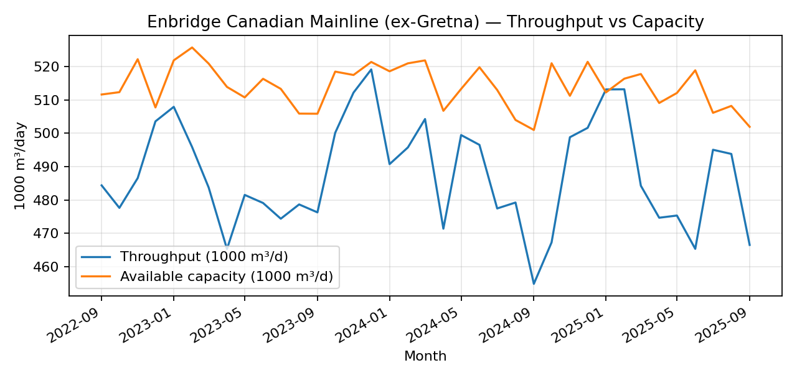
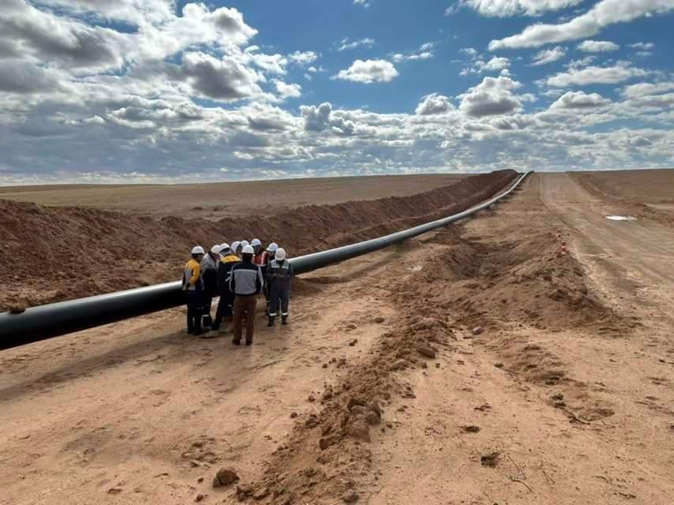
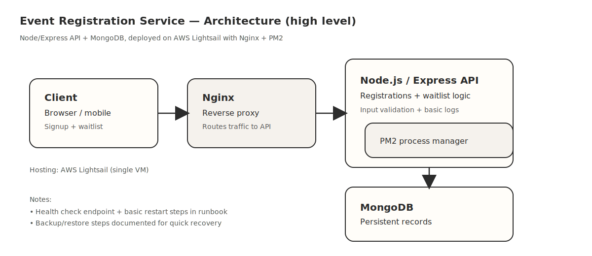

Software Developer & Data Analyst
Building software and working with data to solve real problems.
Computer Science and Statistics student at the University of Alberta. Focused on simulation tools, forecasting models, and full-stack applications.
Expertise
What I work withLanguages
Python, C#, JavaScript, TypeScript, SQL, R, Bash
Frontend
React, HTML, CSS, REST APIs, responsive design
Backend
Node.js, Express, FastAPI, PostgreSQL, MongoDB
Data & Machine Learning
Pandas, NumPy, PySpark, PyTorch, time-series forecasting
DevOps & Cloud
Docker, AWS, GitHub Actions, Nginx, Linux, CI/CD
Tools & Platforms
Git, Power BI, Databricks, Jira, Confluence
Simulation
SimPy, Monte Carlo methods, discrete-event simulation
Business Intelligence
Power BI, Excel (Power Query, PivotTables), dashboards
Collaboration
Agile workflows, code reviews, technical documentation
Experience
Where I've workedData Analyst
LP Pipeline Optimization · Student Project
Built flow analysis models using Python and SQL. Processing datasets in Databricks with PySpark, automating ETL refreshes, and designing Power BI dashboards to track throughput and utilization KPIs.
Software Developer
UAlberta Blueprint · Non-profit
Building a full-stack web app using React and Node.js for a non-profit organization. Containerized the environment with Docker, set up CI/CD pipelines, and increased test coverage from 45% to 78%.
Data & ML Engineer
Kaggle Competition · Top 4% Global
Developed time-series forecasting models to predict sales trends. Engineered lag features and validated models for accuracy. Finished in the top 100 out of 2,800+ teams globally.
Selected Work
Things I've builtBuildTwin
End-to-end construction scenario simulation platform. C# orchestrator + Python sim engine with Monte Carlo analysis and KPI dashboards.
Digital Twin Simulator
What-if analysis tool with progress replay. Generates reports and charts. Built with CLI, configs, tests, and CI.
Analytics API Service
FastAPI service for running simulations programmatically. Endpoints for simulate, compare, and replay. Docker-ready with tests.
Sales Forecasting
Config-driven forecasting pipeline with time-based validation. Lag features, rolling stats, reproducible experiments. Top 4%.
Event Registration Service
Microservice handling 1,200+ registrations. Deployed on AWS with Nginx and PM2. Zero data loss.
Pipeline Flow Analysis
Throughput analysis under demand scenarios. Automated ETL with Databricks and Power BI dashboards.
Case Studies
Reporting, documentation, and deliveryPipeline Flow Analysis (Student Project)
Python · SQL · Databricks · Power BI
What it was
A throughput and constraint analysis project where the goal was to make performance questions easier to answer with consistent metrics and a repeatable reporting workflow.
What I did
- Defined a simple KPI set (throughput, available capacity, utilization) and kept definitions in a data dictionary.
- Aggregated monthly flows by key point (example shown: ex‑Gretna) and built a repeatable refresh workflow in Python/SQL.
- Produced a monthly scorecard (last 24 months) and a one‑page chart for quick stakeholder updates.
- Wrote lightweight runbook notes (inputs, outputs, and checks) so the reporting could be picked up by someone else.
Outcome
Reporting became more consistent and easier to review. The workflow reduced manual refresh steps and made it simpler to spot data issues and explain KPI movement.
Public data snapshot
Chart built from CER open data for the Enbridge Canadian Mainline (key point: ex‑Gretna). Used here as a portfolio demo.
Background photo (CC0): Wikimedia Commons.
Event Registration Service (Club Project)
Node.js · MongoDB · AWS Lightsail · Nginx · PM2
What it was
A small service for event signups and waitlists used across multiple student events. The focus was reliability: no lost records, clear run steps, and quick recovery if something breaks.
What I did
- Built the API and database workflow for registrations and waitlists.
- Deployed on AWS Lightsail with Nginx and PM2.
- Wrote basic health checks and a short runbook so teammates could operate it without deep DevOps experience.
Outcome
Supported 1,200+ registrations with stable operation and clear handoff documentation.
Docs
Simple architecture diagram (kept lightweight on purpose — easy to scan).
If you add screenshots later, keep them anonymized (no real names/emails) and show only the UI + key flows.
Get in touch
Let's work together
I'm looking for internship opportunities in software engineering, data analytics, or simulation. Feel free to reach out.
jingch10@ualberta.ca